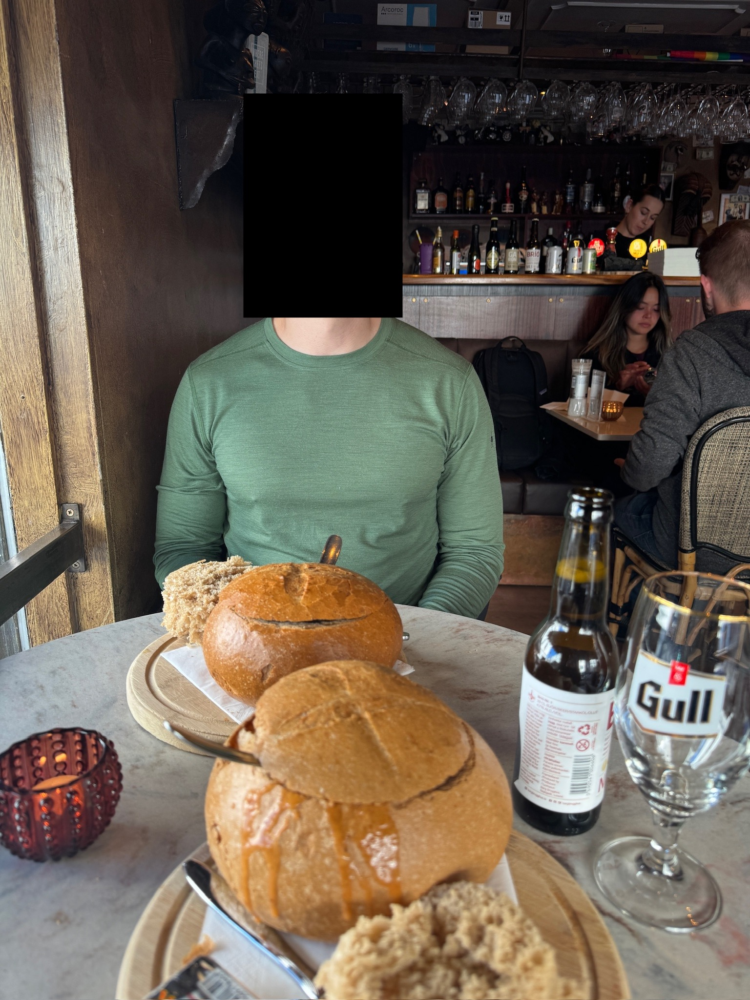
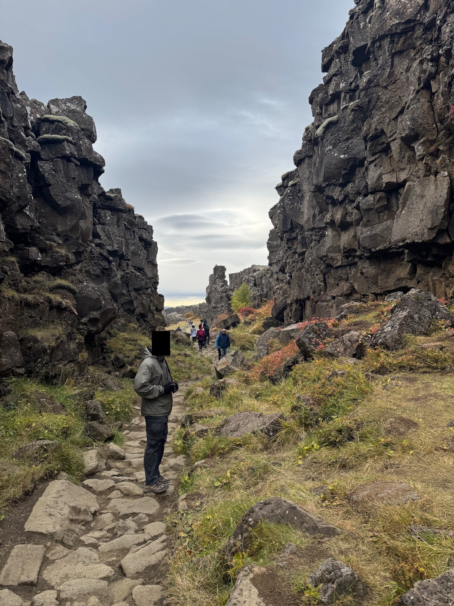
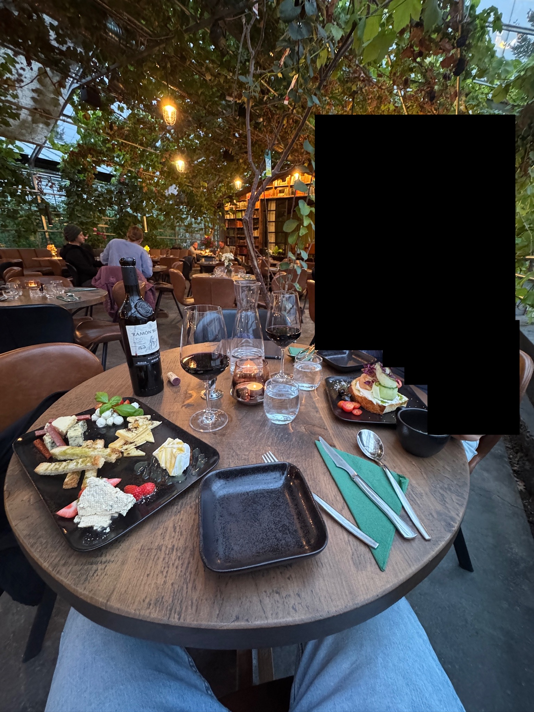
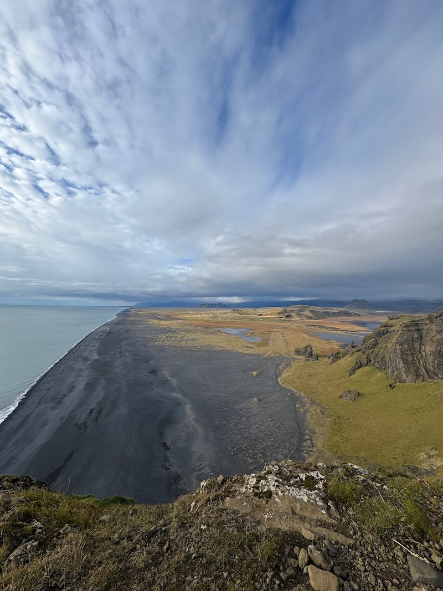
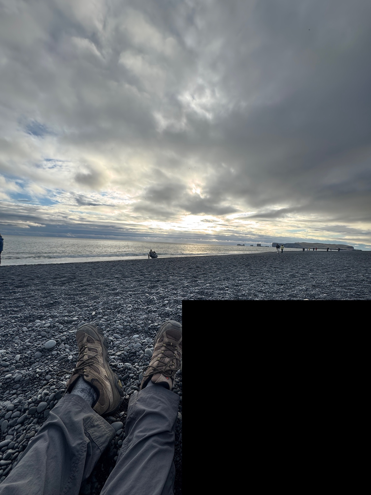
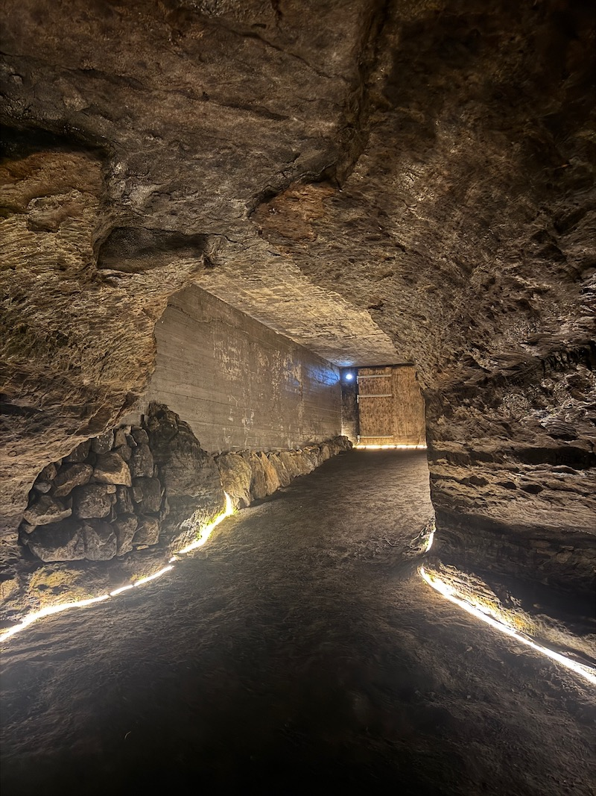
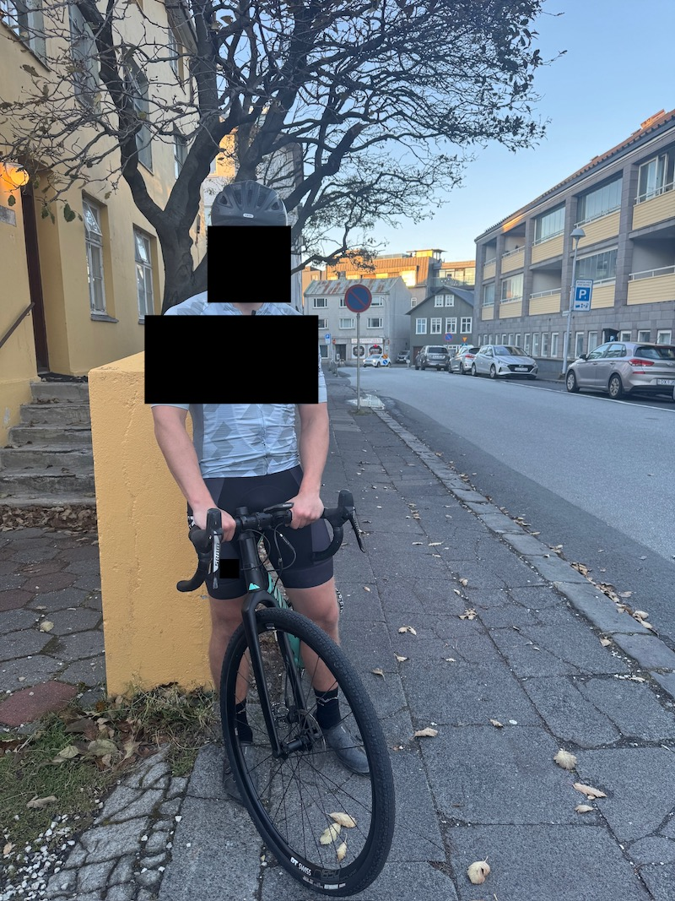
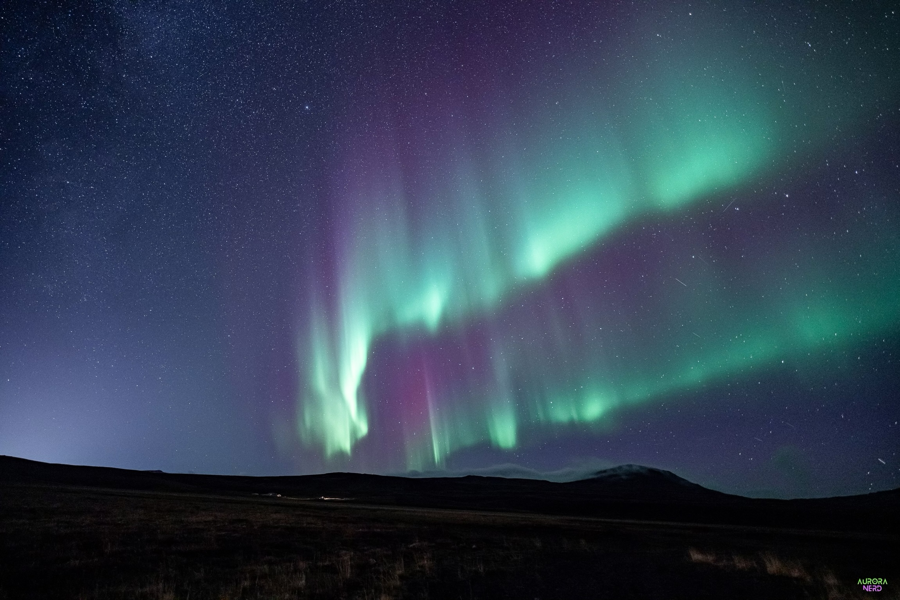
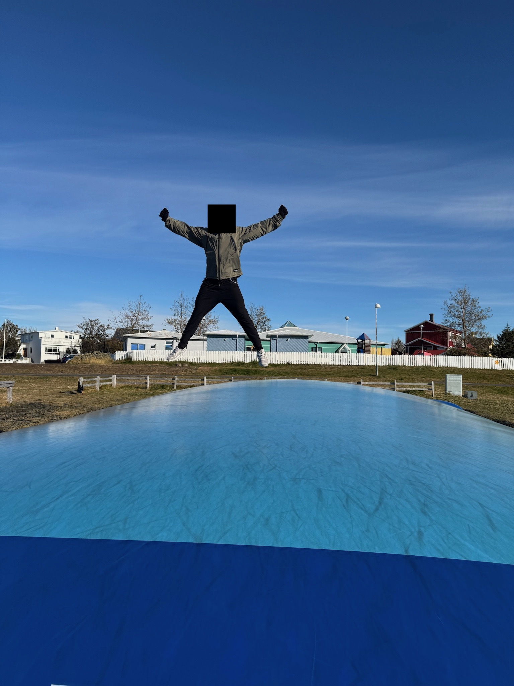
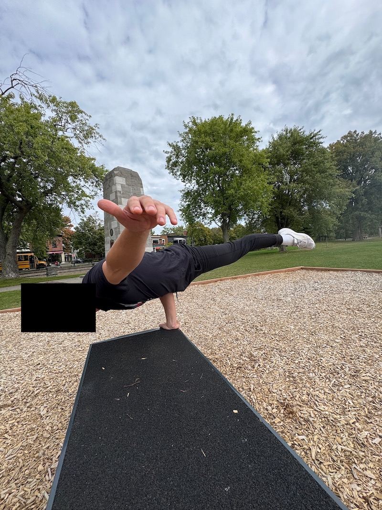

Iceland trip report from 25 September - 01 October 2024.
After a semi-restful plane ride from the States full of "psychotic fast-forwarding" of movies, we (myself and travel partner (TP)) touched down in Iceland, land of the green and not the ice as the old elementary school proverb goes. It was cold and windy as expected, biting through my supposed-to-be-waterproof-and-thus-supposed-to-be-windproof jacket and forcing a reluctant retreat into the carry-on duffel bag for gloves.
Blue Lagoon was our first stop, a spa with warm waters that aren't generated by lava or tectonic plates or an army of vikings (or Icelandic prisoners) deep underneath the earth's surface doing hard manual labor, but a geothermal power plant just up the road. Straight from Iceland's government's website:
About 85% of the total primary energy supply in Iceland is derived from domestically produced renewable energy sources
Renewable energy provided almost 100% of electricity production [in 2015], with about 73% coming from hydropower and 27% from geothermal power
Of course, the reason for these admirable stats is Iceland's geology that allows the harnessing of energy coming from natural phenomena like rivers (for hydropower) and hot springs (for geothermal power). They're just making do with what they got.
The Blue Lagoon was a welcome refreshment after our nine hours of flying. The water was warm and sulfur-y, the pseudoscientific (?) face masks droopy and irritating on the bare eyeball, and the free smoothie delicious. But it was not as awakening an introduction to Iceland as the $23 we spent on two coffees and a scone at a local mom-and-pop shop on the way into Reykjavik. The price felt criminal and exploitative, until I reminded myself that we weren't at a tourist trap and this wasn't coffee branded to be what native Icelanders drink: this was a run-of-the-mill shop and everyone paid these prices, living there or visiting there. I became a bit more grateful living where I do.
Downtown Reykjavik felt like I expected it to, having been primed by Icelandic television I don't watch and the zero Icelandic people I know. It was a cross between a fishing town that realized they had something to offer to tourists and a modern European city; the infrastructure was modern, yet the traditional style and ~vibes~ remained in the form of architecture, colors, and lamb meat offerings (which I readily accepted throughout the trip). The hubbub was less frantic than I expected of a capital city, but then again, this wasn't the capital of any ol' country. Iceland isn't as stylish and classy as Paris nor is it as loud and bustling as New York, rather existing somewhere else on the spectrum of cities. I saw no traditional businessmen nor lawyers like the ones populating the bustling streets of New York, no tech bros slapping away on their laptops in the few cafés and shops we visited. The locals we saw toiled away about their days in a casual manner, walking slowly with smiles on their faces as they chatted to their companions and enjoyed the frigid (to me, balmy to them) weather.
Hallgrímskirkja, the massive church near the center of Reykjavik, was much less Barad-dûr-like than I had expected, nor was there a giant firey eye waiting for us at the top when we got off the elevator. The views were unsurprisingly expansive in all directions thanks to the tower's prominence and the surrounding landscape.
A small snack was had at the renowned hot dog stand Bæjarins Beztu Pylsur for what we, two people hailing from the Kingdom of Hot Dogs and Hot Dog Eaters known as America, both deemed mediocre wieners that were all hype. But hey, some places are for the experience, not the taste.
Dinner consisted of bread and soup bowls at a local joint before heading back to the hotel to sleep off the jet lag. (I woke up in the middle of the night and prayed it was late, only to look in horror at the 9:30 p.m. showing on my phone screen. I somehow fell back to sleep.)

Another $42 kick in the balls thanks to breakfast later and we were off to the nearest national park, Thingvellir, for some hiking and sightseeing. This, too, felt very Iceland-y, from the barren, rocky landscape to the overcast sky and diverse groups of tourists. We visited Öxarárfoss, a waterfall, and the Silfra fissure, a rift between the North American and Eurasian tectonic plates. (Sadly, no snorkeling or scuba diving for us like plenty of people were doing.) It's pretty freakin' crazy to think that this (among other places, obviously) is the place where those plates meet and slowly drift away from each other, much to snorkeler's and diver's delight.

Dinner that night was at the lesser-known, but still wonderful and tomato-themed, Vínstofa Friðheima (most people go to the better-known Friðheimar, but they're only open for lunch). The greenhouse was quiet and moody with rain pattering on the windows and gentle candles lighting each table, making for an intimate meal. We learned that this farm alone was responsible for 40% of Iceland's tomato sales, including being the only one allowed to grow and sell the piccolo variety.

We chatted with the Polish waiter, learning about what it's like to live in Iceland as a foreigner, and in a tiny town nonetheless. He and his boss hooked it up with some of the plumpest, most picturesque strawberries we had ever seen and tasted. The shape, the texture, the juiciness, the taste, the color—Iceland was one of the last places I'd expect to get a strawberry this perfect.
'Twas a day full of aquatic features.
The first stop was Seljalandsfoss and Gljufrabui waterfalls, both accessed from the same crowded trailhead. Seljalandsfoss was massive and, like most waterfalls, just kept dumping torrential amounts of ice-cold water into a pool. The scale was unfathomable to me, something that must be seen in person to appreciate just how much ice was melting from the upstream glacier. We took our obligatory tourist pictures in front of and behind the behemoth and continued on.
The second stop was Skógafoss waterfall. Equally as impressive as Seljalandsfoss, it was the last in a series of 10+ falls along the Skógá River with a pleasant trail following its path. We stopped for a delicious meal of fish and chips at Mia's Country Van. This had me wondering how simple of a life the man who ran the van lived. He was open from 12:00-4:00pm every day, but that doesn't include preparing and cleaning the kitchen, shopping (or, potentially worse, actually fishing), driving to and from work since there were very few possible places to live nearby, and so on. What type of life did he live considering how expensive Iceland is and him charging relatively cheap prices?

The third stop was Dyrhólaey. While it wasn't life-changing, a wave of emotion and nostalgia washed over me as I gazed outwards to sea and inwards to land. The landscape felt aesthetically apocalyptic; calm water extends as far south as the eye could see, a black sand beach separating the ocean's water from green growth and rolling hills and glaciers. It was Miller's planet with a soundtrack of rock + roll playing on repeat in my head. We walked along the summit path enjoying the view and gentle breeze.

That night I had the most expensive non-venue beer I've ever had at a whopping $18. Was it delicious? Yes. Did I make sure to enjoy every sip of the stout flavor? Yes. Was it worth it? I'm still debating that... But as my father would say: "I'm on vacation".
Our ho(s)tel had shared bathrooms and a community feel, completed by the kitchen and dining room common areas, people keeping their doors open, and a nice selection of board games. We opted for an early bedtime instead of camaraderie and connection.
An uneventful day. Rain was in full swing as we attempted to drive east to Diamond Beach, forcing us to retreat to Vik and drier conditions. We frolicked about on Vik's black sand beach before turning to the internet for an alternative plan—we didn't have one originally because why would we? The weather should bend itself to our will, not the other way around. Evidently the Icelandic version of Zeus had other plans.
We settled on driving away from the rain to Caves of Hella, a tourist attraction that went into two different caves that OG Icelanders used for church services, sheep-keeping, barbecues, and outright partying, or so the guide claimed. The construction was actually impressive assuming there was minimal renovation made by modern man, but when survival is dependent on how well you dig and make a cave, I can't fault them for making it so cozy.

We grabbed crepes at Crepes. Nutella crepes. I felt like I was in 6th grade again eating Nutella toast and convincing myself that it was somehow healthy, but apparently Nutella is incredibly popular in Europe and Iceland is probably included in that.
Our second stop in Reykjavik after the hotel was at the home of a private bicycle renter. I picked up my gravel bike and was off for the first of two bike rides, this one starting in the south and going north. The headwind was brutal, both in bitterness on my poorly-insulated body and for requiring significantly more power to go even moderately fast. I called it early in hopes of having better luck tomorrow, ultimately riding for just under 50 minutes and 11 miles. The bicycle infrastructure and attitude towards cyclists was unsurprisingly good and welcoming, respectively. Trails were clearly marked and abided by and cars steered clear of me on the road.

Dinner was at a quaint bar-restaurant less than a minute's walk from our hotel. Dessert included coffee to keep us awake for the night's northern lights tour. We also got to enjoy the company of a street cat that had wandered in to the diner's delight and the waiter's horror.
We layered up (me going four deep), hopped into a sprinter van at the pickup spot, and started hunting for the lights to the north of Reykjavik. Our tour guide was excellent; he was obviously experienced in both hunting, the telling of pre-canned (but still very funny) jokes, and general hospitality as indicated by the pastries and hot chocolate he brought along.
I don't remember at what point we actually saw the aurora, but boy, when we saw it we saw it. While the photos with long exposure do it more justice than what it actually looks like—the red colors are almost impossible to make out with the naked eye—it's amazing to see the green lights jump around in the sky, popping up in different places and dazzling in and out of intense and subtle hues. It was way more than I expected. I thought there was going to be a very faint green in the sky, like light pollution had leaked into the sky from a nearby city that only used green bulbs; instead the shapes varied from streaks to curtains to rivers and danced across the sky above us.

This morning I had what could be the best cinnamon roll/bun/whatever you prefer to call it I've ever had in my life. (This reinforces my belief that chains can easily produce better food than mom-and-pop shops because of the manufacturability of the products.) Braud and Co is a must when in Reykjavik and hungry for sugar and cinnamon in one sweet, sweet package.
I went on my second bike ride, which turned out to be one of the most impactful ones of my life, not because of the ride itself, but because of what I saw, experienced, and thought about on the ride. In the same voice of "it was at this time that he knew he fucked up"... it was on this ride that I began thinking about high-trust societies. The moment clicked happened when I rounded a bend in the trail and saw about 50 young schoolchildren romping about on the path outside the school's chainlink fence with a handful of adults nearby. I thought to myself "man, it must be difficult to keep track of them all" before continuing to ride, but then I looked further down the path to see even more kids doing their own thing on the path with no adults in the immediate vicinity. I turned yet another corner to see yet more children, this time mixed in with obvious adult pedestrians who had no relationship to the school nor the kids; regular people going on their daily walk or commute that just so happened to coincide with recess time.
Being American, this was odd to me. In what world did people let six-year-olds run rampant on public walking paths with a kid:adult ratio greater than 20? And for those kids to be so far! Blasphemous! Irresponsible!
And then it came to me: trust. These people trusted everyone else in their community enough to let their kids go wild without yelling at the chaperone. They trusted others to follow rules and laws and social conventions, spoken or unspoken, written or unwritten. This is the next evolutionary step of the social contract; after they have (voluntarily) given up certain rights, they also (voluntarily) give up, or at least grasp less tightly to, certain privileges, like locking doors or hiding valuables away from plain sight.
It seems like Iceland had mastered this. I began to think back on the past five days, on all the trust I had seen and experienced. I had seen one police car driving on the highway, but never any others nor actual policemen on foot, motorcycle, or bicycle. I saw no homeless or "sketchy" looking people. I never had any concern about locking doors or leaving valuables on the car seat while out and about. I never felt unsafe in any regard, whether driving on the road or walking in the city. People were kind, respectful, and helpful.
Was this utopia?
This question was immediately followed with "why aren't the States like this?". To be fair, I think there are spots within the States that are high trust. But the melting pot that some consider a feature others consider a bug: diverse values lead to low trust.
TP picked me up from the bike drop-off point and I took them to the hidden gem that is a bounce pillow. Measuring in at a whopping 35 feet wide by 55 feet long, this bad boy can propel you to the sky with ease and it did for me, I just wish I was more coordinated to make cooler poses... Still fun as heck!

Dinner was the final hurrah of novel experiences, delivering itself in the form of horse meat as the main of a tasting menu at Forrettabarinn Restaurant & Bar. While citations are sparse, info on horse meat in Iceland can be found here. Some "highlights":
Pagans sacrificed and ate horses; however, when Iceland became Christian, the authorities quickly banned eating horses.
Even as late as 1861, being called a horse eater or horse meat eater was such an offence, as it was only suitable for trolls and outlaws.
Despite the plight of the public, the aversion to eating horse meat was strong. Its consumption was considered a significant moral failure, and many priests of the country feared for people’s souls. They had to keep the word of God and good manners to the public, and although the need was great, eating horse meat was such a severe offence that it was not left unaddressed.
The meat was actually pretty good. I wish it didn't come with the sauce on it so I could have the pure taste of the meat. It was also right on the edge of my moral food line. We finished our meal and headed come to pack for the airport in the morning.
An eight-hour layover in Montreal was juuuuuuuuuuust enough to convince TP to venture into the city (read: suburbs) for a bit of midday exploring. We decided on a short walking food tour in the area 10 minutes south of the airport during which we'd revive the dormant part of TP's brain that housed their knowledge of French.
Our first stop was in complete stereotypical American-visiting-Canada fashion: poutine at Chez L'Gourmand. Who knew that such a simple amalgamation of fries, cheese curds, and gravy could be so popular? It wasn't even that good! (My eating most of it may say otherwise, but I was hungry.)
Our second stop was at a small café that I can't seem to find on Google for some delicious croissants.
Our third stop—unrelated to food—was a nice bench on the edge of the canal. We sat and read and enjoyed the weather and talked to TP's parents and watched the passerby and imagined that this is what retirement was like, or at least I did.

Our fourth stop was Falafel St. Jacques for a nice pita and baklava.
Icelander's English was excellent, assumedly by necessity given their tourist-dependent economy. I never had translation issues or felt poorly about not speaking Icelandic.
Roundabouts are da bomb.